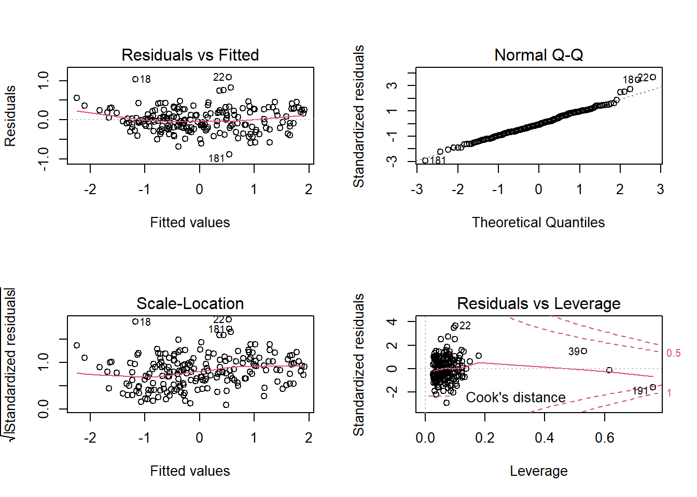
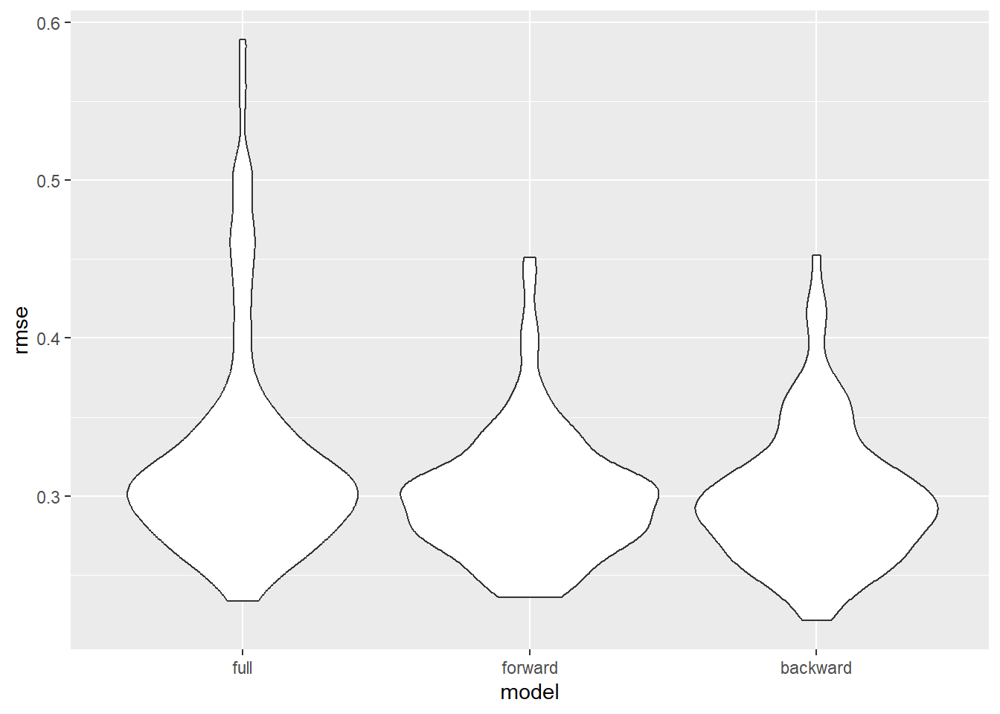

library(tidyverse)
## ── Attaching core tidyverse packages ──────────────────────── tidyverse 2.0.0 ──
## ✔ dplyr 1.1.3 ✔ readr 2.1.4
## ✔ forcats 1.0.0 ✔ stringr 1.5.0
## ✔ ggplot2 3.4.3 ✔ tibble 3.2.1
## ✔ lubridate 1.9.2 ✔ tidyr 1.3.0
## ✔ purrr 1.0.2
## ── Conflicts ────────────────────────────────────────── tidyverse_conflicts() ──
## ✖ dplyr::filter() masks stats::filter()
## ✖ dplyr::lag() masks stats::lag()
## ℹ Use the conflicted package (<http://conflicted.r-lib.org/>) to force all conflicts to become errors
library(modelr)
library(mgcv)
## 载入需要的程辑包：nlme
##
## 载入程辑包：'nlme'
##
## The following object is masked from 'package:dplyr':
##
## collapse
##
## This is mgcv 1.9-0. For overview type 'help("mgcv-package")'.
library(MPV)
## Warning: 程辑包'MPV'是用R版本4.3.2 来建造的
## 载入需要的程辑包：lattice
## 载入需要的程辑包：KernSmooth
## KernSmooth 2.23 loaded
## Copyright M. P. Wand 1997-2009
## 载入需要的程辑包：randomForest
## randomForest 4.7-1.1
## Type rfNews() to see new features/changes/bug fixes.
##
## 载入程辑包：'randomForest'
##
## The following object is masked from 'package:dplyr':
##
## combine
##
## The following object is masked from 'package:ggplot2':
##
## margin
library(leaps)
## Warning: 程辑包'leaps'是用R版本4.3.2 来建造的
library(p8105.datasets)
library(MASS)
##
## 载入程辑包：'MASS'
##
## The following object is masked from 'package:MPV':
##
## cement
##
## The following object is masked from 'package:dplyr':
##
## select
library(ggplot2)
library(car)
## Warning: 程辑包'car'是用R版本4.3.2 来建造的
## 载入需要的程辑包：carData
##
## 载入程辑包：'car'
##
## The following object is masked from 'package:dplyr':
##
## recode
##
## The following object is masked from 'package:purrr':
##
## some
import data
overall_dataset = read.csv("data/overall_dataset.csv")
NA_table_1 =
overall_dataset|>
is.na()|>
colSums()
NA_table_1|>
knitr::kable(col.names = c("Counts of NA"))
| country_name |
3 |
| corruption_index |
3 |
| government_effectiveness |
3 |
| political_stability_and_absence_of_violence_terrorism |
1 |
| regulatory_quality |
3 |
| rule_of_law |
3 |
| voice_and_accountability |
6 |
| GDP |
14 |
| latitude |
3 |
| longitude |
3 |
| development |
0 |
| continent |
0 |
overall_dataset =
overall_dataset|>
drop_na()|>
dplyr::select(-country_name, -latitude, -longitude)
Full model
full.model = lm(corruption_index ~ ., data = overall_dataset)
empty.model = lm(corruption_index ~ 1,data = overall_dataset)
The full model includes all variables except latitude and longitude
since continent is included as location information. This model is
treated as the baseline to compare with model after selection.
summary of full model
Tables below show summary information of the full model. The p-value
for government_effectiveness, rule_of_law, voice_and_accountability,
continentEurope have p-value lower than any reasonable significance
level(1%, 5%, 10%), which means these variable are more significant than
other in this model. The R2adj for this model is 0.8983053, which
presents a very high proportion of variance in response variable
explained the linear relationship between with predictors and response
variable.
All.Criteria = function(the.model){
tibble(
the.BIC = BIC(the.model),
the.LL = logLik(the.model),
the.AIC = AIC(the.model),
the.PRESS = PRESS(the.model),
the.R2adj = summary(the.model)$adj.r.squared,
)
}
full.model|>
broom::tidy()|>
dplyr::select(term, estimate, p.value)|>
knitr::kable(caption ="Estimate and P-value for full model")
Estimate and P-value for full model
| (Intercept) |
0.1523043 |
0.0733336 |
| government_effectiveness |
0.4465416 |
0.0000002 |
| political_stability_and_absence_of_violence_terrorism |
0.0283823 |
0.5324848 |
| regulatory_quality |
-0.0388673 |
0.6007547 |
| rule_of_law |
0.4555096 |
0.0000004 |
| voice_and_accountability |
0.1605535 |
0.0011255 |
| GDP |
-0.0000066 |
0.5607391 |
| developmentDeveloping |
-0.1096876 |
0.1403518 |
| developmentLeast Developed |
0.0176445 |
0.8598391 |
| continentAsia |
-0.1247569 |
0.1038164 |
| continentEurope |
-0.2211527 |
0.0178381 |
| continentNorth America |
-0.1367619 |
0.1492751 |
| continentOceania |
-0.0151796 |
0.8877381 |
| continentSouth America |
-0.0818944 |
0.4882106 |
All.Criteria(full.model)|>
knitr::kable(caption = "Criterias for full model")
Criterias for full model
| 167.1942 |
-43.93509 |
117.8702 |
21.03754 |
0.8983053 |
check normality and remove outlier
Plots below shows that the residuals are overall normally
distributed. The qq-plot shows the regression is linear and there is no
need to add transformation variables. Then, outliers are detected and
removed by using cutoffs based on t distribution. With data after
removing oultiers, the full model is updated, and BIC and AIC are all
decreased.
SR = stdres(full.model)
n = length(full.model$residuals)
p = length(full.model$coefficients)
alpha = 0.01
t.cutoff = qt(1- alpha/2, n-p)
par(mfrow=c(2,2))
plot(full.model)

outliers = which(abs(SR)>t.cutoff)
outliers|>
knitr::kable(caption = "outliers")
outliers
| 18 |
18 |
| 22 |
22 |
| 158 |
158 |
| 181 |
181 |
new.data = overall_dataset[-outliers,]
full.model = lm(corruption_index ~ ., data = new.data)
All.Criteria(full.model)|>
knitr::kable(caption ="Estimate and P-value for updated full model")
Estimate and P-value for updated full model
| 121.2881 |
-21.1351 |
72.27019 |
16.45733 |
0.9183903 |
Selected model
After the updated full model is built, backward and forward selection
function is applied to gain selected models.
backward model selection
The summary of backward selected model is shown below.
political_stability_and_absence_of_violence_terrorism,
regulatory_quality, GDP are deleted.
backward.model.AIC = stepAIC(full.model, scope = list(lower = empty.model, upper= full.model), k = 2,direction = "backward",trace = FALSE)
forward.model.AIC = stepAIC(empty.model, scope = list(lower = empty.model, upper= full.model), k = 2,direction = "forward",trace = FALSE)
backward.model.AIC|>
broom::tidy()|>
dplyr::select(term, estimate, p.value)|>
knitr::kable(caption ="Estimate and P-value for backward selected model")
Estimate and P-value for backward selected model
| (Intercept) |
0.1376752 |
0.0643409 |
| government_effectiveness |
0.4179061 |
0.0000000 |
| rule_of_law |
0.4672865 |
0.0000000 |
| voice_and_accountability |
0.1650610 |
0.0001498 |
| developmentDeveloping |
-0.0972708 |
0.1397905 |
| developmentLeast Developed |
0.0038976 |
0.9645571 |
| continentAsia |
-0.1489371 |
0.0321245 |
| continentEurope |
-0.2443750 |
0.0038247 |
| continentNorth America |
-0.1315702 |
0.1044792 |
| continentOceania |
0.0714741 |
0.4446223 |
| continentSouth America |
-0.0796026 |
0.4484500 |
All.Criteria(backward.model.AIC)|>
knitr::kable(caption = "Criterias for backward selected selected model")
Criterias for backward selected selected model
| 106.0023 |
-21.39401 |
66.78802 |
15.978 |
0.9195136 |
forward model selection
The summary of forward selected model is shown below.
political_stability_and_absence_of_violence_terrorism,
regulatory_quality, GDP, continent are deleted.
forward.model.AIC|>
broom::tidy()|>
dplyr::select(term, estimate, p.value)|>
knitr::kable(caption ="Estimate and P-value for forward selected model")
Estimate and P-value for forward selected model
| (Intercept) |
-0.0288657 |
0.5590166 |
| rule_of_law |
0.4763815 |
0.0000000 |
| government_effectiveness |
0.4057927 |
0.0000001 |
| voice_and_accountability |
0.1599748 |
0.0000248 |
| developmentDeveloping |
-0.0211514 |
0.7460158 |
| developmentLeast Developed |
0.1691951 |
0.0443599 |
All.Criteria(forward.model.AIC)|>
knitr::kable(caption = "Criterias for forward selected selected model")
Criterias for forward selected selected model
| 134.9283 |
-48.9552 |
111.9104 |
20.29352 |
0.8974732 |
Comparision of full model, forward and backward selected model
Backward selected model has the lowest BIC and highest R2adj. We
would say that the backward selected model is the most optiaml model
among these three.
forward_model = All.Criteria(forward.model.AIC)|>
mutate(the.LL = as.double(the.LL))
backward_model = All.Criteria(backward.model.AIC)|>
mutate(the.LL = as.double(the.LL))
full_model = All.Criteria(full.model)|>
mutate(the.LL = as.double(the.LL))
comparsion =
bind_rows( full_model,forward_model, backward_model)|>
mutate(model = c('full', 'forward', 'backward'))|>
dplyr::select(model, everything())|>
knitr::kable(caption = "Comparision of full model, forward and backward selected model")
comparsion
Comparision of full model, forward and backward selected
model
| full |
121.2881 |
-21.13510 |
72.27019 |
16.45733 |
0.9183903 |
| forward |
134.9283 |
-48.95520 |
111.91040 |
20.29352 |
0.8974732 |
| backward |
106.0023 |
-21.39401 |
66.78802 |
15.97800 |
0.9195136 |
cross validation
cv_df =
crossv_mc(new.data, 100) |>
mutate(
train = map(train, as_tibble),
test = map(test, as_tibble))
cv_df =
cv_df |>
mutate(
model_full = map(train, \(df) lm(corruption_index ~ ., data = df)),
model_forward = map(train, \(df) lm(corruption_index ~ rule_of_law + government_effectiveness + voice_and_accountability + development, data = df)),
model_backward = map(train, \(df) lm(corruption_index ~ rule_of_law + government_effectiveness + voice_and_accountability + development+ continent, data = df)))|>
mutate(
rmse_full = map2_dbl(model_full, test, \(mod, df) rmse(model = mod, data = df)),
rmse_forward = map2_dbl(model_forward, test, \(mod, df) rmse(model = mod, data = df)),
rmse_backward = map2_dbl(model_backward, test, \(mod, df) rmse(model = mod, data = df)))
cv_df |>
dplyr::select(starts_with("rmse")) |>
pivot_longer(
everything(),
names_to = "model",
values_to = "rmse",
names_prefix = "rmse_") |>
mutate(model = fct_inorder(model)) |>
ggplot(aes(x = model, y = rmse)) + geom_violin()
